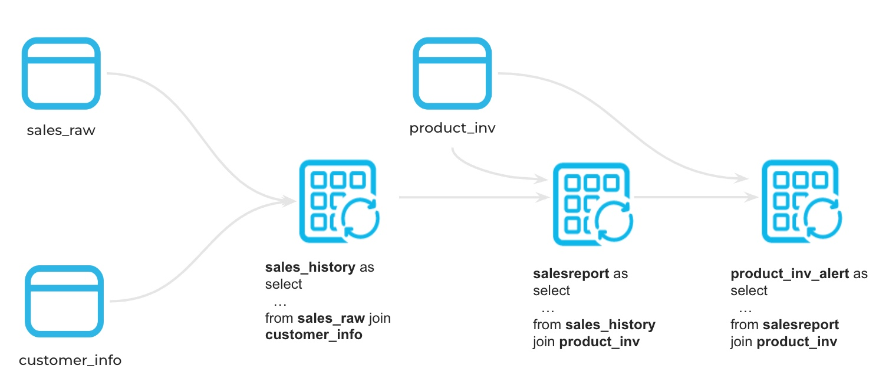
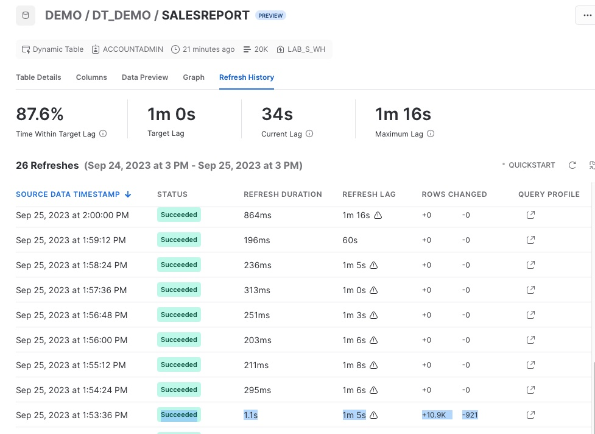
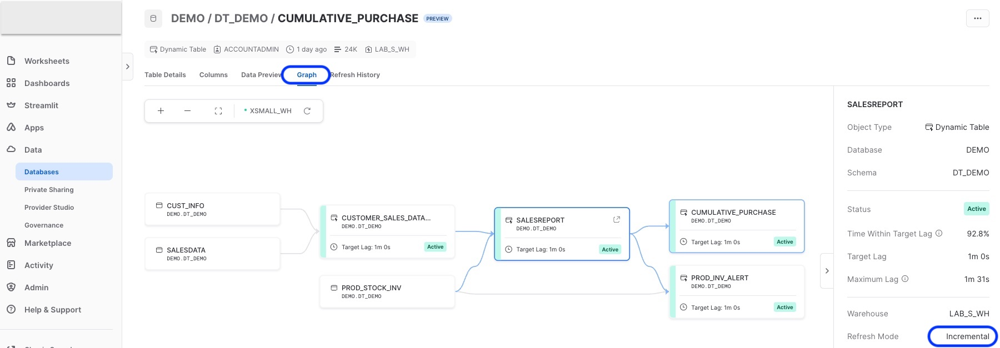

Dynamic tables are new declarative way of defining your data pipeline in Snowflake. It's a new kind of Snowflake table which is defined as a query to continuously and automatically materialize the result of that query as a table. Dynamic Tables can join and aggregate across multiple source objects and incrementally update results as sources change.
Dynamic Tables can also be chained together to create a DAG for more complex data pipelines.

Dynamic Tables are the building blocks for continuous data pipelines. They are the easiest way to build data transformation pipelines in snowflake across batch and streaming use cases.
In this quickstart we will build a change data capture (CDC) pipeline, cumulative sum using Python UDTF data validation using Dynamic tables. We will also look at some of the built in features around Dynamic tables.
Prerequisites
- Use of the Snowflake free 30-day trial environment or your own Snowflake environment
- Basic knowledge of SQL, database concepts, and objects
- Familiarity with JSON semi-structured data
- Basic Python programming (To use Snowpark. Not a requirement for Dynamic tables)
What You'll Learn
- How to create a declarative data pipeline DAG using Dynamic tables
- How to pause and resume the data pipeline
- How to monitor and manage Dynamic tables for continuous data pipeline
- How to automate the data validation process using Dynamic tables
- How to setup data quality check alerts
- How to use Snowpark UDTF in a Dynamic Table data pipeline
What You'll Need
- A Snowflake Account
What You'll Build
- A continuous data pipeline using Dynamic tables
- Manage and monitor Dynamic tables
- Data validation automation and alerts
- A Python user defined table function and use it in Dynamic tables
Problem Statement
Let's assume that you are a data engineer at an online retail company, where a wide array of products is sold. In this role, we collect customer purchase and product sales data, initially storing it in a raw data table. Our primary tasks involve creating a continuous data pipeline for generating sales reports and validate the data for an alert system to notify the team of potential low inventory levels for specific products.
Data Pipeline Architecture

Sample data
You can either follow these instructions to setup a local Kafka docker environment
OR
We will use the Python "Faker" library to generate some test data required for this project. You don't need to learn python to use Dynamic Tables, it's only used to generate sample datasets. In order to run this python code we will build and use Python UDTF
We are going to build our lab in a database called "demo" and schema name "dt_demo". Feel free to use any database if "demo" database is already in use or you don't have access to it.
Go to your Snowflake account and open a worksheet and write or paste this code and rename it to "01_setup_sample_data"
CREATE DATABASE IF NOT EXISTS DEMO;
CREATE SCHEMA IF NOT EXISTS DEMO.DT_DEMO;
USE SCHEMA DEMO.DT_DEMO;
CREATE WAREHOUSE XSMALL_WH
WAREHOUSE_TYPE = STANDARD
WAREHOUSE_SIZE = XSMALL
AUTO_SUSPEND = 300
AUTO_RESUME = TRUE;
Once the database is created, we will create 3 UDTF to generate our source data. First table is CUST_INFO and insert 1000 customers into it using this new Python UDTF.
create or replace function gen_cust_info(num_records number)
returns table (custid number(10), cname varchar(100), spendlimit number(10,2))
language python
runtime_version=3.10
handler='CustTab'
packages = ('Faker')
as $$
from faker import Faker
import random
fake = Faker()
# Generate a list of customers
class CustTab:
# Generate multiple customer records
def process(self, num_records):
customer_id = 1000 # Starting customer ID
for _ in range(num_records):
custid = customer_id + 1
cname = fake.name()
spendlimit = round(random.uniform(1000, 10000),2)
customer_id += 1
yield (custid,cname,spendlimit)
$$;
create or replace table cust_info as select * from table(gen_cust_info(1000)) order by 1;
Next table is PROD_STOCK_INV and insert 100 products inventory into it using this new Python UDTF.
create or replace function gen_prod_inv(num_records number)
returns table (pid number(10), pname varchar(100), stock number(10,2), stockdate date)
language python
runtime_version=3.10
handler='ProdTab'
packages = ('Faker')
as $$
from faker import Faker
import random
from datetime import datetime, timedelta
fake = Faker()
class ProdTab:
# Generate multiple product records
def process(self, num_records):
product_id = 100 # Starting customer ID
for _ in range(num_records):
pid = product_id + 1
pname = fake.catch_phrase()
stock = round(random.uniform(500, 1000),0)
# Get the current date
current_date = datetime.now()
# Calculate the maximum date (3 months from now)
min_date = current_date - timedelta(days=90)
# Generate a random date within the date range
stockdate = fake.date_between_dates(min_date,current_date)
product_id += 1
yield (pid,pname,stock,stockdate)
$$;
create or replace table prod_stock_inv as select * from table(gen_prod_inv(100)) order by 1;
Next table is SALESDATA to store raw product sales by customer and purchase date
create or replace function gen_cust_purchase(num_records number,ndays number)
returns table (custid number(10), purchase variant)
language python
runtime_version=3.10
handler='genCustPurchase'
packages = ('Faker')
as $$
from faker import Faker
import random
from datetime import datetime, timedelta
fake = Faker()
class genCustPurchase:
# Generate multiple customer purchase records
def process(self, num_records,ndays):
for _ in range(num_records):
c_id = fake.random_int(min=1001, max=1999)
#print(c_id)
customer_purchase = {
'custid': c_id,
'purchased': []
}
# Get the current date
current_date = datetime.now()
# Calculate the maximum date (days from now)
min_date = current_date - timedelta(days=ndays)
# Generate a random date within the date range
pdate = fake.date_between_dates(min_date,current_date)
purchase = {
'prodid': fake.random_int(min=101, max=199),
'quantity': fake.random_int(min=1, max=5),
'purchase_amount': round(random.uniform(10, 1000),2),
'purchase_date': pdate
}
customer_purchase['purchased'].append(purchase)
#customer_purchases.append(customer_purchase)
yield (c_id,purchase)
$$;
-- Create table and insert records
create or replace table salesdata as select * from table(gen_cust_purchase(10000,10));
This completes our sample data stored in raw base tables. In real world, you will load this data into Snowflake either using COPY COMMAND, connectors, Snowpipe or Snowpipe Streaming
Check if there is data in all 3 raw tables -
-- customer information table, each customer has spending limits
select * from cust_info limit 10;
-- product stock table, each product has stock level from fulfilment day
select * from prod_stock_inv limit 10;
-- sales data for products purchsaed online by various customers
select * from salesdata limit 10;
With Dynamic Tables, customers provide a query and Snowflake automatically materializes the results of that query.
That means, instead of creating a separate target table and writing code to transform source data and update the data in that table, you can define the target table as a Dynamic Table, specifying the query that performs the transformation and just forget about the scheduling and orchestration.
The user specifies a minimum acceptable freshness in the result (target lag), and Snowflake automatically tries to meet that target, further enhancing the flexibility and control data engineers can have over their pipelines without the normally associated complexity.

Ok great! let's create our first Dynamic Table. Open a new worksheet in Snowflake and rename it to "02_Dynamic_tables_pipeline". For this we will extract the sales information from the salesdata table and join it with customer information to build the customer_sales_data_history, note that we are extracting raw json data(schema on read) and transforming it into meaningful columns and data type
USE SCHEMA DEMO.DT_DEMO;
CREATE OR REPLACE DYNAMIC TABLE customer_sales_data_history
LAG='DOWNSTREAM'
WAREHOUSE=XSMALL_WH
AS
select
s.custid as customer_id,
c.cname as customer_name,
s.purchase:"prodid"::number(5) as product_id,
s.purchase:"purchase_amount"::number(10) as saleprice,
s.purchase:"quantity"::number(5) as quantity,
s.purchase:"purchase_date"::date as salesdate
from
cust_info c inner join salesdata s on c.custid = s.custid
;
Looking good, we will see what DOWNSTREAM means here in just a minute. let's run some quick sanity checks.
-- quick sanity check
select * from customer_sales_data_history limit 10;
select count(*) from customer_sales_data_history;
Now, let's combine these results with the product table and create a SCD TYPE 2 transformation using window the function "LEAD", it gives us the subsequent rows in the same result set to build a TYPE 2 transformation.
CREATE OR REPLACE DYNAMIC TABLE salesreport
LAG = '1 MINUTE'
WAREHOUSE=XSMALL_WH
AS
Select
t1.customer_id,
t1.customer_name,
t1.product_id,
p.pname as product_name,
t1.saleprice,
t1.quantity,
(t1.saleprice/t1.quantity) as unitsalesprice,
t1.salesdate as CreationTime,
customer_id || '-' || t1.product_id || '-' || t1.salesdate AS CUSTOMER_SK,
LEAD(CreationTime) OVER (PARTITION BY t1.customer_id ORDER BY CreationTime ASC) AS END_TIME
from
customer_sales_data_history t1 inner join prod_stock_inv p
on t1.product_id = p.pid
;
salesreport table should refresh automatically. Let's check the results.
select * from salesreport limit 10;
select count(*) from salesreport;
Test
Let's test this DAG by adding some raw data in the base tables.
-- Add new records
insert into salesdata select * from table(gen_cust_purchase(10000,2));
-- Check raw base table
select count(*) from salesdata;
-- Check Dynamic Tables after a minute
select count(*) from customer_sales_data_history;
select count(*) from salesreport;
You can check the Dynamic table graph and refresh history from the Snowsight. We will learn more about this dashboard later in its own section

That's it, we created a DAG using Dynamic Tables. It runs whenever there is data in the raw base tables and infers the lag based on the downstream dynamic tables lag using the LAG parameter as "DOWNSTREAM". In this example the CUSTOMER_SALES_DATA_HISTORY table will refresh based on the lag of its downstream table ("1 Minute") and data in the raw table (SALESDATA).
Dynamic tables lag or target lag can defined in terms of time or dependency referred from other dynamic tables
It's a common practice to use programming languages like Python in Data Engineering for constructing data pipelines. If you're migrating an existing data pipeline based on Python, Java, or Scala to Snowflake, Snowpark can be a valuable tool. Snowpark supports the creation of Python-based transformations through user-defined functions.
In below example, we'll demonstrate how to build a cumulative total of customer account balances each month and leverage this information to identify any instances of customers exceeding their set limits in the CUST_INFO table. Let's create a new SQL worksheet and rename it to "03_Dynamic_Table_With_UDTF"
USE SCHEMA DEMO.DT_DEMO;
CREATE OR REPLACE FUNCTION sum_table (INPUT_NUMBER number)
returns TABLE (running_total number)
language python
runtime_version = '3.10'
handler = 'gen_sum_table'
as
$$
# Define handler class
class gen_sum_table :
## Define __init__ method ro initilize the variable
def __init__(self) :
self._running_sum = 0
## Define process method
def process(self, input_number: float) :
# Increment running sum with data from the input row
new_total = self._running_sum + input_number
self._running_sum = new_total
yield(new_total,)
$$
;
This function computes the cumulative total and can be seamlessly incorporated into any SQL code or applied to any table as a table function. It's flexibile and allows us to feed any data partition, making it highly adaptable to any "cumulative total" use case. Let's partition this total by Customer and Month using dynamic table. This way it becomes highly modular and SQL independent.
CREATE OR REPLACE DYNAMIC TABLE cumulative_purchase
LAG = '1 MINUTE'
WAREHOUSE=XSMALL_WH
AS
select
month(creationtime) monthNum,
year(creationtime) yearNum,
customer_id,
saleprice,
running_total
from
salesreport,
table(sum_table(saleprice) over (partition by creationtime,customer_id order by creationtime, customer_id))
;
Results,
select * from cumulative_purchase limit 10;
Similar results can be achieved using complex SQL queries, but it becomes more versatile and modular when implemented as a Python User-Defined Function (UDF).

The DAG that we created above will build our data pipeline but there are many use cases of DT, like creating data validation checks or data quality etc. In our data set, we want to know if a product is running low on inventory, let's say less than 10%. Let's do this in a new SQL worksheet, rename it to "04_Dynamic_Table_For_Data_Validation"
USE SCHEMA DEMO.DT_DEMO;
CREATE OR REPLACE DYNAMIC TABLE PROD_INV_ALERT
LAG = '1 MINUTE'
WAREHOUSE=XSMALL_WH
AS
SELECT
S.PRODUCT_ID,
S.PRODUCT_NAME,CREATIONTIME AS LATEST_SALES_DATE,
STOCK AS BEGINING_STOCK,
SUM(S.QUANTITY) OVER (PARTITION BY S.PRODUCT_ID ORDER BY CREATIONTIME) TOTALUNITSOLD,
(STOCK - TOTALUNITSOLD) AS UNITSLEFT,
ROUND(((STOCK-TOTALUNITSOLD)/STOCK) *100,2) PERCENT_UNITLEFT,
CURRENT_TIMESTAMP() AS ROWCREATIONTIME
FROM SALESREPORT S JOIN PROD_STOCK_INV ON PRODUCT_ID = PID
QUALIFY ROW_NUMBER() OVER (PARTITION BY PRODUCT_ID ORDER BY CREATIONTIME DESC) = 1
;
Now let's check if there are any products that has low inventory
-- check products with low inventory and alert
select * from prod_inv_alert where percent_unitleft < 10;
Snowflake Alerts are now in Preview. This can help you send email alerts to your product procurement and inventory team to restock the required product. Remember to update the email address and warehouse in the below code.
CREATE NOTIFICATION INTEGRATION IF NOT EXISTS
notification_emailer
TYPE=EMAIL
ENABLED=TRUE
ALLOWED_RECIPIENTS=('first.last@company.com')
COMMENT = 'email integration to update on low product inventory levels'
;
CREATE OR REPLACE ALERT alert_low_inv
WAREHOUSE = XSMALL_WH
SCHEDULE = '30 MINUTE'
IF (EXISTS (
SELECT *
FROM prod_inv_alert
WHERE percent_unitleft < 10 and ROWCREATIONTIME > SNOWFLAKE.ALERT.LAST_SUCCESSFUL_SCHEDULED_TIME()
))
THEN CALL SYSTEM$SEND_EMAIL(
'notification_emailer', -- notification integration to use
'first.last@company.com', -- Email
'Email Alert: Low Inventory of products', -- Subject
'Inventory running low for certain products. Please check the inventory report in Snowflake table prod_inv_alert' -- Body of email
);
-- Alerts are pause by default, so let's resume it first
ALTER ALERT alert_low_inv RESUME;
-- Add new records
insert into salesdata select * from table(gen_cust_purchase(10000,2));

These alerts will only run if there is new data in the dynamic table (low inventory products). So, its super easy to manage and maintain alerts in Snowflake on live data.
You can monitor, resume or pause alerts.
-- Monitor alerts in detail
SHOW ALERTS;
SELECT *
FROM
TABLE(INFORMATION_SCHEMA.ALERT_HISTORY(
SCHEDULED_TIME_RANGE_START
=>dateadd('hour',-1,current_timestamp())))
WHERE
NAME = 'ALERT_LOW_INV'
ORDER BY SCHEDULED_TIME DESC;
-- Suspend Alerts
-- Important step to suspend alert and stop consuming the warehouse credit
ALTER ALERT alert_low_inv SUSPEND;
Monitor DAG and dashboard
Snowflake makes it easier to monitor your data pipeline.
You can also monitor Dynamic Tables using the DYNAMIC_TABLE_REFRESH_HISTORY() function in INFORMATION_SCHEMA. This is sample SQL for dynamic tables in our data pipeline
SELECT *
FROM
TABLE(INFORMATION_SCHEMA.DYNAMIC_TABLE_REFRESH_HISTORY())
WHERE
NAME IN ('SALESREPORT','CUSTOMER_SALES_DATA_HISTORY','PROD_INV_ALERT','CUMULATIVE_PURCHASE')
-- AND REFRESH_ACTION != 'NO_DATA'
ORDER BY
DATA_TIMESTAMP DESC, REFRESH_END_TIME DESC LIMIT 10;
You can use Snowsight GUI to visualize and monitor the directed acyclic graph (DAG) of your pipeline. Go to Data > Databases > DEMO > DT_DEMO > Dynamic Tables
From Snowsight you can monitor Dynamic Table DAG, refresh history, preview data, refresh mode, columns and table ddl etc

You can also monitor any issues with the refresh using the two table functions in information schema -
Few tips for monitoring Dynamic Tables -
- You should monitor Dynamic Tables for a few runs and verify if the refresh cycles are as desired (full or incremental).
- Consider that any changes to the base tables DDL will most certainly impact the performance or refresh cycles of the Dynamic tables just like any other data pipeline.
- In some cases DT defaults to full refresh like if you have masking policy on base tables, lateral flatten of nested structure or some other non deterministic functions like UDTF. These will be addressed in the future.
SUSPEND and RESUME Dynamic Tables
Dynamic tables can be suspended or resumed on demand. Snowflake automatically suspends it after 5 consecutive failures to prevent any credit consumption. If you suspend a Dynamic table upstream, it will automatically suspend its child or downstream Dynamic Tables in the DAG.
-- Resume the data pipeline
alter dynamic table customer_sales_data_history RESUME;
alter dynamic table salesreport RESUME;
alter dynamic table prod_inv_alert RESUME;
-- Suspend the data pipeline
alter dynamic table customer_sales_data_history SUSPEND;
alter dynamic table salesreport SUSPEND;
alter dynamic table prod_inv_alert SUSPEND;
Cost
Dynamic tables incur cost in three ways: details here
- Storage: DT materializes the results and saves it just like a normal Snowflake tables
- Cloud service compute: You will only incur this if daily cloud service cost is over 10% of your bill (very very rare)
- Warehouse compute cost: this is associated with the warehouse you use with Dynamic Table. This is only used if there is data to be processed upstream from base tables
Dynamic tables require a virtual warehouse to perform updates. Snowflake recommends testing dynamic tables using dedicated warehouses in order to understand related costs.Dynamic tables cost is driven by frequency of data refreshes in base tables and target LAG.
REFRESH_MODE can be FULL or INCREMENTAL based on the query. You can run the Show Dynamic table command or check dynamic table dashboard to determine your DT refresh mode. Check this page for more details.
Dynamic tables support Time Travel, Replication, Data Governance, Masking, Tagging etc. just like a standard Snowflake table.
Dynamic Tables are a new kind of Snowflake table which is defined as a query and continually and automatically maintains the result of that query as a table. It's extremely flexible and we want you to start thinking of Dynamic tables as the easiest and default way of creating data pipelines. Some top use cases of DTs are -
- Merging CDC data continuously into target tables with low latency
- Slowly Changing Dimensions
- Continuous data aggregation & summarization from multiple sources
- Filtering data by ID in raw tables into separate tables and sharing to clients
- Dimensional modeling, medallion architecture, multi layer data engineering and transformations
- Data quality validation and monitoring
- Aggregation, Joins, grouping of data on reference data sets using the newly arrived data
- Joins on multiple table and flattening of nested data
- Modularize code using functions and abstract away common logic out of SQL
What we've covered
- Creating and managing Dynamic tables
- Using Snowpark UDTF in a Dynamic table
- Creating data validation rule using Dynamic tables
- Alerting on those rules
- Monitoring Dynamic table using dashboard and SQL
Cleaup after Demo/HOL is complete for any cost/credits loss prevention
DROP SCHEMA DEMO.DT_DEMO;
-- if you wish to drop the entire database
DROP DATABASE DEMO;